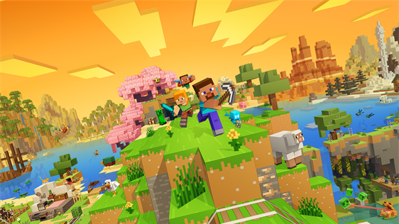

My First Minecraft Adventure
October 7, 2026 by Demarkie Brown

Minecraft is a game that gives players the opportunity to explore,
build, and create their own unique worlds. One of my first
experiences in Minecraft involved exploring the environment and
gathering resources such as wood, stone, and food. As the day
progressed, I quickly learned the importance of creating a shelter
before nightfall to protect myself from the creatures that appeared
throughout the world.
As I continued playing, I became more comfortable with crafting
tools and exploring different areas of the Minecraft world.
Discovering new locations and materials made the experience more
interesting because there was always something new to find.
Minecraft allows players to be creative while also challenging
them to survive and make decisions about how they want to develop
their world.
Building My Minecraft World
October 6, 2026 by Demarkie Brown

Building is one of the most enjoyable parts of Minecraft because
players can transform simple materials into almost anything they
imagine. I started by constructing a small house using wood and
stone, but eventually I began adding more rooms, decorations, and
areas for storing the resources that I collected while exploring.
Watching a simple structure gradually develop into a larger base
made building one of my favourite parts of the game.
There are many possibilities when creating a Minecraft world.
Players can construct farms, villages, castles, bridges, and many
other structures. Every project provides an opportunity to
experiment with different materials and designs. This freedom to
build and explore makes every Minecraft world different and allows
players to express their creativity in their own way.